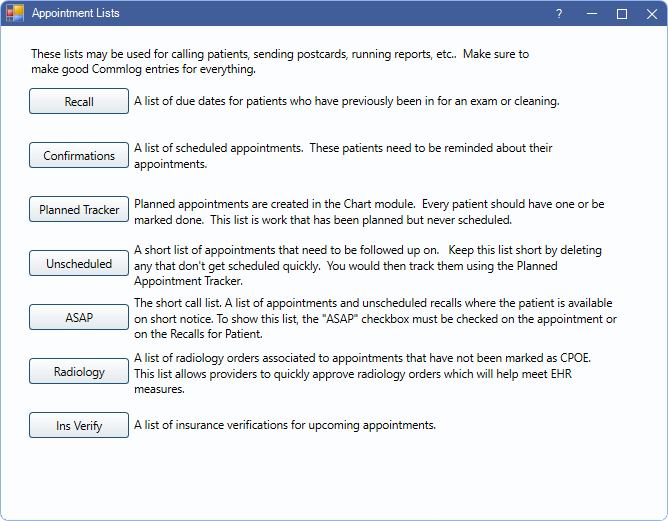

Appointment Lists
Appointment lists can be used to manage, schedule, and track appointments.
In the Appointments Module, in the Toolbar, click Lists.
Recall List: A list of patients who are due for a recall appointment that are not yet scheduled. Use the list to schedule appointments and send reminders.
Confirmation List: A list of all patients who have upcoming appointments. Use the list to confirm appointments and track confirmation status.
Planned Appointment Tracker: A list of all Planned Appointments that have not been scheduled. Use the list to schedule planned appointments and track appointment status. Every appointment for treatment should be based on a Planned Appointment so that any rescheduling, broken, or deleted appointments are not lost. This list should be long and regularly reviewed. It should not include recall appointments.
Unscheduled List: A short list of patients who were no-shows or cancelled without rescheduling. Send appointments here as a quick reminder to contact the patient to reschedule. Appointments should not stay on this list long. The list should not include recall appointments.
ASAP List: A list of patients who would like to come in as soon as an opening is available. Use the list to identify patients and notify them of openings. Scheduled appointments, Planned Appointments, and unscheduled recall appointments can all be marked as ASAP.
Radiology: For EHR only. A list of the logged-on provider's upcoming x-ray procedures that have not yet been approved (marked is CPOE). Use the list to quickly approve radiology orders. These procedures count towards the denominator of the CPOE Radiology Order measure and must be approved by the EHR provider to count in the numerator.
Insurance Verification List: A list of patients who have upcoming appointments and need their patient eligibility or insurance plan benefits verified. Use it to track and manage verification. Useful for offices that verify insurance prior to upcoming appointments.